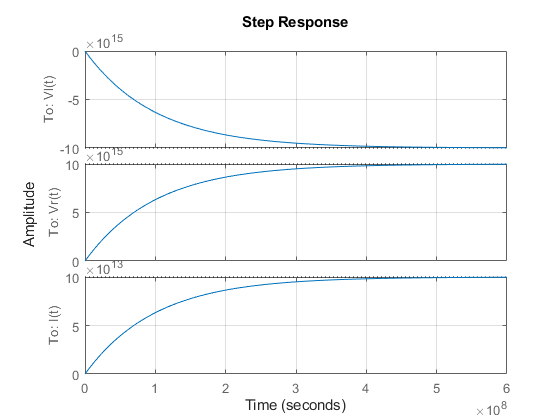

Laboratório de Sistemas Dinâicos
Prática 06 08/07/2024 Autores: Victor Hugo Daia Lorenzato e Whilker Henrique Santos Silva
Contents
Limpar workspcade
close all;
clear;
clc;
Ex01 A
syms R C S; G1_S = 1/(R*C*S + 1); [num, den] = numden(G1_S); fprintf(" %s \n" + ... "-----------\n" + ... "%s\n" ,num, den);
1 ----------- C*R*S + 1
Ex01 B
r = 100; c = 1*10^-6; s = tf('s'); G1_S = 1/(r*c*s + 1); printsys(G1_S.num{1}, G1_S.den{1}); step(G1_S); grid('on');
num/den =
1
------------
0.0001 s + 1
Ex01 C
step(G1_S.num{1}, G1_S.den{1});
hold on;
r = 2*r;
G1_S = 1/(r*c*s + 1);
step(G1_S.num{1}, G1_S.den{1});
grid('on');
legend('R=100', 'R=200');
hold off;
Ex01 D
syms R C S; G2_S = C*S/(R*C*S + 1); [num, den] = numden(G2_S); num = simplify(num); den = simplify(den); fprintf(" %s \n" + ... "-----------\n" + ... " %s\n" ,num, den);
C*S ----------- C*R*S + 1
Ex01 E
r = 100; c = 1*10^-6; s = tf('s'); G2_S = c*s/(r*c*s + 1); step(G2_S.num{1}, G2_S.den{1}); grid('on');
Ex01 F
Ex01 G
Ex01 H
R = 100; C = 1*10^-6; A = -1/R*C; B = 1/R*C; C = [1; -1/R]; D = [0; 1/R]; sistema = ss(A, B, C, D);
Ex01 H
sistema.OutputName = {'Vc(t)','I(t)'};
step(sistema);
grid('on');
Ex02 A
syms R L S; G3_S = 1/(L*S + R); [num, den] = numden(G3_S); fprintf(" %s \n" + ... "-----------\n" + ... "%s\n" ,num, den);
1 ----------- R + L*S
Ex02 B
r = 100; l = 1*10^-6; s = tf('s'); G3_S = 1/(l*s + r); printsys(G3_S.num{1}, G3_S.den{1}); step(G3_S); grid('on');
num/den =
1
-------------
1e-06 s + 100
Ex02 C
syms R L S; G4_S = 1 - (R/(L*S+R)); [num, den] = numden(G4_S); num = simplify(num); den = simplify(den); fprintf(" %s \n" + ... "-----------\n" + ... " %s\n" ,num, den);
L*S ----------- R + L*S
Ex02 D
r = 100; l = 1*10^-6; s = tf('s'); G4_S = l*s/(l*s + r); step(G4_S.num{1}, G4_S.den{1}); grid('on');
Ex02 E
Ex02 J
Ex02 K
R = 100; L = 1*10^-6; A = -1/R*L; B = 1/L; C = [-R; -R; 1]; D = [1; 0; 0]; sistema = ss(A, B, C, D);
Ex02 L
sistema.OutputName = {'Vl(t)', 'Vr(t)', 'I(t)'};
step(sistema);
grid('on');
 Ex03 A
syms R L C S; G5_S = 1/(L*C*S^2 + R*C*S + 1); [num, den] = numden(G5_S); fprintf(" %s \n" + ... "-------------------\n" + ... "%s\n" ,num, den);
1 ------------------- C*R*S + C*L*S^2 + 1
Ex03 B
r = 100; l = 1*10^-6; c = 1*10^-6; s = tf('s'); G5_S = 5/(l*c*s^2 + r*c*s + 1); printsys(G5_S.num{1}, G5_S.den{1}); step(G5_S); grid('on');
num/den =
5
------------------------
1e-12 s^2 + 0.0001 s + 1
Ex03 C
syms R L C S; G6_S = C*S/(L*C*S^2 + R*C*S + 1); [num, den] = numden(G6_S); fprintf(" %s \n" + ... "-------------------\n" + ... "%s\n" ,num, den);
C*S ------------------- C*R*S + C*L*S^2 + 1
Ex03 D
r = 100; l = 1*10^-6; c = 1*10^-6; s = tf('s'); G6_S = 5*c*s/(l*c*s^2 + r*c*s + 1); printsys(G6_S.num{1}, G6_S.den{1}); step(G6_S); grid('on');
num/den =
5e-06 s
------------------------
1e-12 s^2 + 0.0001 s + 1
Ex03 E
Ex03 F
Ex03 G
%comparação Vc figure(1); r = 100; step(G5_S.num{1}, G5_S.den{1}); hold on; r = 2*r; G5_S = 5/(l*c*s^2 + r*c*s + 1); step(G5_S.num{1}, G5_S.den{1}); grid('on'); title('Vc(t)') legend('R=100', 'R=200'); hold off; %comparação I figure(2); r = 100; step(G6_S.num{1}, G6_S.den{1}); hold on; r = 2*r; G6_S = 5*c*s/(l*c*s^2 + r*c*s + 1); step(G6_S.num{1}, G6_S.den{1}); grid('on'); title('I(t)') legend('R=100', 'R=200'); hold off;

Ex03 H
R = 100; L = 1*10^-6; c = 1*10^-6; A = [-R/L, -1/L; 1/c, 0]; B = [1/L; 0]; C = [0, 1; -R, -1; R, 0; 1, 0]; D = [0; 1; 0; 0]; sistema = ss(A, B, C, D);
Ex03 I
sistema.OutputName = {'Vc(t)', 'Vl(t)', 'Vr(t)', 'I(t)'};
step(sistema);
grid('on');
Ex04
figure(1); bode(G1_S); title('G1(s)'); grid('on'); figure(2); bode(G2_S); title('G4(s)'); grid('on'); figure(3); bode(G5_S); title('G5(s)'); grid('on');